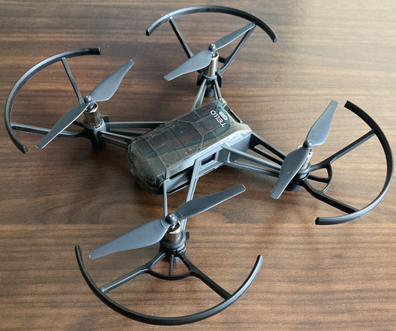
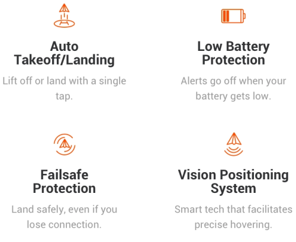
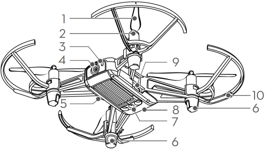
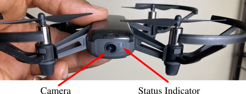
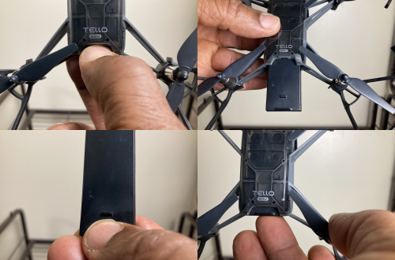
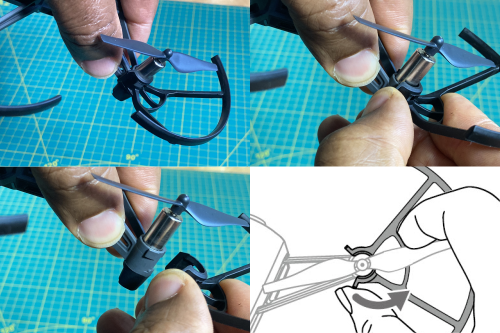
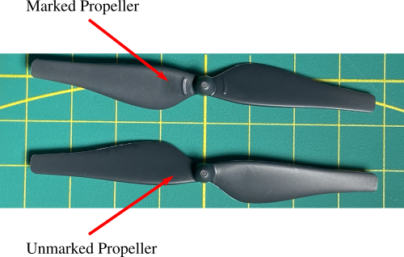
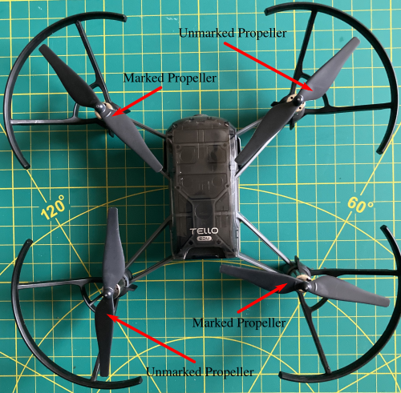
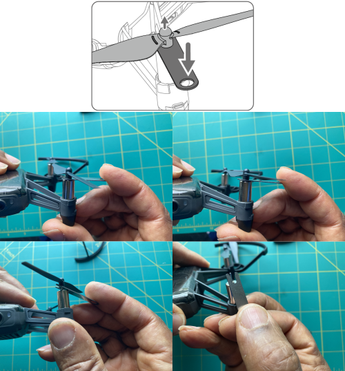

Tello Edu Overview
1 Introduction
{kind=link}
The Tello Edu is a small indoor/outdoor quadcopter with a vision positioning system and onboard camera. Its vision positioning system and embedded flight controller allows it to hover in place, receive incremental motion commands, and allow the user to set its speed. In addition to these set commands, the user can read the current speed, access the current battery level, access the current flight time, and capture live photos/video. For more details on the Tello Edu’s specifications, please see Tello Edu Specifications.
{kind=link}
Note
Ryze Robotics sells both the Tello and Tello Edu drone. The Tello Edu firmware has more capabilities for handling multiple drones when compared with the Tello firmware. Ryze Robotics and DJI have partnered to sell the Tello Edu drone; hence, the name DJI Tello Edu drone.
2 Major Components
{kind=link}
The Tello Edu has the following major components:
Propellers
Motors
Status Indicator
Camera
Power Button
Antennas
Vision Positioning System
Battery
Micro USB Port
Propeller Guards
To fly the Tello, you’ll need to
Know how to turn the Tello on/off.
Have an awareness of the status as given by Status Indicator.
Have an awareness of the video stream from the camera.
Replace the battery.
Reattach the propeller guard(s) if they fall off accidentally due to a crash.
Remove/reattach the propeller guards if the IMU requires recalibration.
Replace a propeller if it is damaged due to a crash.
{kind=link}
4 Status Indicator
{kind=link}
With a fully charged battery, after turning on the Tello, the status indicator should flash the following sequence:
Green - 1x
Red - 5x
Green-White - 1x
Red-Green-Yellow - 3x
Once this sequence has completed, your Tello should flash yellow (quickly), and during this period you can connect to your Tello via WiFi.
Note
If the status indicator flashes red, the battery is low, and you should replace the battery with a fully charged one before flying.
Note
If the status indicator does not flash at all, make sure the battery is fully charged and placed correctly inside the Tello.
Note
See the Tello User Manual for more details on how to determine the Tello status.
5 Removing/Replacing Battery
{kind=link}
5.1 Removing Battery
Firmly grasp the notches located at the bottom of the battery.
Pull the battery away from the Tello.
5.2 Replacing Battery
Slide the battery into the Tello until you feel a slight snap.
Make sure the bottom edge of the battery is flush with the rear of the Tello.
6 Removing/Attaching Propeller Guards
{kind=link}
Note
The steps below minimize the stresses on the Tello motor arms when removing the guards. You can perform these steps with either the left or right hand.
6.1 Removing a Propeller Guard
Grasp the Tello motor arm with your left thumb and left fore-finger near the propeller guard. Try not to squeeze the Tello motor arm too tightly.
Place your right thumb on the propeller guard release tab, your right fore-finger on the propeller guard’s mid-frame, and your right index-finger on the antenna.
Gently press the release tab with your right thumb and the propeller guard will pop off.
Warning
DO NOT use excessive force when removing a propeller guard as doing so may damage the Tello motor arm.
6.2 Attaching a Propeller Guard
Grasp the Tello motor arm with your left thumb and left fore-finger near the propeller guard. Try not to squeeze the Tello motor arm too tightly.
Hold the propeller guard with your right fore-finger on the propeller guard’s mid-frame and your index-finger supporting from the bottom.
Press the propeller guard onto propeller guard post, making sure the notches on the guard post pop inside the slots on the propeller guard. You should hear a slight pop. Slightly jiggle the propeller guard to make sure its firmly attached.
7 Removing/Attaching Propellers
7.1 Propeller Types
{kind=link}
In order to move foward/backward and turn clockwise/counter-clockwise, a quadcopter utilzes two types of propellers that spin in opposite directions. To help you identify these two types, the Tello has one type with two raised embossed arcs near the center (Marked Propeller) and another type with no embossed arcs (Umarked Propeller).
Warning
If you incorrectly attach the propellers on the Tello, it will fly erratically and certainly crash, so be careful!!!
7.2 Locations
{kind=link}
With the Tello lying horizontally and its front facing away from you (see image above), the motors in the top-left and bottom-right rotate clockwise, whereas the motors in the top-right and bottom-left rotate counter-clockwise. If you look carefully at these two types of propellers, you’ll notice that to achieve lift, the marked propellers must be placed in the top-left and bottom-right (undergoing a clockwise rotation), whereas the unmarked propellers must be placed in the top-right and bottom-left (undergoing a counter-clockwise rotation).
- Marked Propreller:
⟹ clockwise rotation
- Unmarked Propeller:
⟹ counter-clockwise rotation
{kind=link}
If you look carefully at the propeller guard posts for the marked propellers, you’ll see a small raised embossed line (although it may be difficult to see).
Danger
Never interchange the locations of the marked propellers and unmarked propellers as you may damage the Tello when attempting to fly.
7.3 Removing
{kind=link}
- Step 1:
When removing a propeller, insert the fork of the propeller removal tool between the motor and the propreller cap.
- Step 2:
Once inserted, use the propeller removal tool as a lever, and gently press down on the tip of removal tool using the motor as a fulcrum.
- Step 3:
Press slowly and gently, and the propeller will slide off.
Caution
Always remove the propellers using the propeller removal tool. DO NOT remove the propellers by hand as doing so may damage the motors.
7.4 Attaching
Attach marked propellers on the motors with marked propeller posts.
Mount unmarked propellers on the motors with unmarked propeller posts.
When attaching, gently press down, and ensure the gap between the bottom of the propeller cap and the motor is no larger than needed to insert the propeller removal tool.